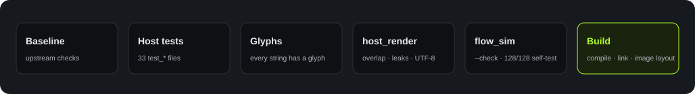

English · 简体中文
Quality
Quality and deployment
Gate
At the end of each sprint, ./tools/validate.sh must exit with code 0 (需求文件夹/08-sprint-roadmap.md, section 1).

Firmware/docs/heygo-changes.md, section 3.| Step | What it finds |
|---|---|
| Host tests | 33 test_* files in Firmware/tests/, for example link core, Turns page, popup page, and ADPCM codec |
| Glyph check | Screen text that the font cannot show |
host_render |
Screen overlap, memory pool leaks, and cut UTF-8 text. It also makes the screens in assets/mockups/. |
flow_sim |
Differences between the simulator and the state machine. The self-test runs in headless Chrome. |
Results that we examined for this book
On 2026-10-18, we ran the full gate ./tools/validate.sh at main commit 284ab00. The exit code was 0.
Full gate
PASS
Simulator self-test
128/128
Glyphs
72+47
Merged image
1.92MiB
For each result, see Firmware build.
Device verification
The team did the board flashing, the phone app tests (TC-01 to TC-24), and the U1 usability test (5 testers) on physical devices. The records of these tests are not in this repository.
Deployment
| Content | Address |
|---|---|
| Simulator | https://azuresword.github.io/Heygo-AiPassport/ |
| This book | https://azuresword.github.io/Heygo-AiPassport/summary/ |
- GitHub Pages publishes the root of
main. The root has a.nojekyllfile. index.htmlopensassets/sim/coach-flow.html. A script makes this page fromFirmware/flows/coach.flow.json. Do not edit it manually.- The book source is in
summary-book/. The output is insummary/.
CI note. The workflows are in
Firmware/.github/workflows/. GitHub reads workflows only from .github/workflows/ at the repository root. Thus, these workflows possibly do not run. This is an inference. We did not examine the Actions page.